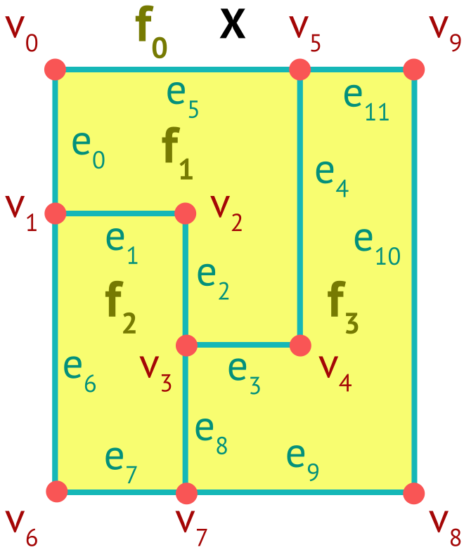
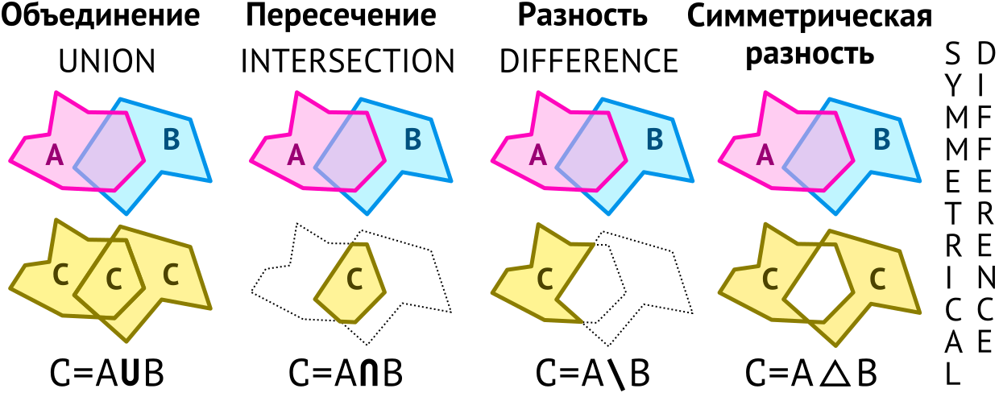
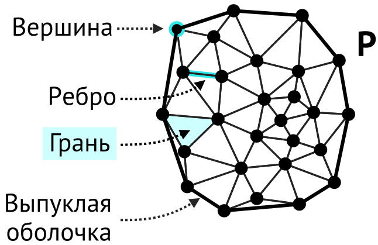

Геометрические операции — III
Геоинформатика I. Базы пространственных данных
6 февраля 2024 г.
Основные операции
- Расстояния между объектами
- Периметр линии
- Площадь полигона
- Точка относительно прямой
- Точка относительно отрезка
- Пересечение отрезков
- Точка в полигоне
- Направление вектора
- Ограничивающий прямоугольник
- Выпуклая оболочка
- Минимальный прямоугольник
- Пересечение множества отрезков
- Оверлей
- Cлияние полигонов
- Полигонизация линий
- Буферная зона
- Триангуляция Делоне
- Диаграмма Вороного
- Вогнутая оболочка
- Триангуляция полигона
- Центроид полигона
- Срединная ось полигона
Разбиение множества
- Разбиение множества
-
Представление множества в виде объединения произвольного числа попарно неперескающихся непустых подмножеств
Семейство множеств \(S = \{S_\alpha\}\), где \(\alpha \in A\) — множество индексов, является разбиением множества \(X\), если:
\(S\) не содержит пустого множества: \(\varnothing \notin S\)
Объединение множеств, входящих в \(S\), равно \(X\):
\[ \bigcup S_\alpha = X \]
Пересечение любых различных множеств \(S\) пусто:
\[ \forall~\alpha,\beta \in A,~\alpha \neq \beta \Longrightarrow S_\alpha \cap S_\beta = \varnothing \]
Разбиение плоскости
Проблема
Плоскость нельзя разбить множествами, которые являются замыканиями (включают собственную границу), т.к. в этом случае они будут пересекаться.
Решение
Представить разбиение в виде совокупности вершин, ребер и граней. Эти подмножества являются открытыми: ребра не включают вершины, а грани не включают вершины и ребра.
\[S = V \bigcup E \bigcup F,\]
где подмножества \(V = \{v_i\}\) — вершины, \(E = \{e_j\}\) — ребра, \(F = \{f_k\}\) — грани.

Полуребра
При обработке разбиений удобно представить каждое ребро \(e_j\) в виде двух полуребер \(\vec{e}_{j,0}\) и \(\vec{e}_{j,1}\), имеющих противоположные направления.
Полуребра называются близнецами:
\[ \vec{e}_{j,0} = \texttt{twin}(\vec{e}_{j,1});~\vec{e}_{j,1} = \texttt{twin}(\vec{e}_{j,0}) \]
Каждое полуребро входит в состав границы только одной грани.
Полуребро направлено таким образом, что грань находится слева от него.
полуребра внешних границ упорядочены против часовой стрелки;
полуребра внутренних границ (дырок) упорядочены по часовой стрелке.
Двусвязный список ребер
Структура данных \(D\), которая опирается на следующие классы объектов:
Вершина \(v\)
| \((x,y)\) | координаты |
| \(\texttt{hedge}\) | полуребро, для которого \(v\) является началом |
Грань \(f\)
| \(\texttt{outer}\) | любое полуребро внешней границы |
| \(\texttt{inner}\) | список любых полуребер дырок (по одному на каждую дырку) |
Особенности
Для неограниченной области \(\texttt{outer} = \varnothing\), для полигона без дырок \(\texttt{inner} = \varnothing\)
Двусвязный список ребер
Полуребро \(\overrightarrow e\)
| \(\texttt{origin}\) | вершина, являющаяся началом полуребра |
| \(\texttt{twin}\) | полуребро-близнец |
| \(\texttt{face}\) | инцидентная грань |
| \(\texttt{next}\) | следующее полуребро в \(\texttt{face}\) |
| \(\texttt{prev}\) | предыдущее полуребро в \(\texttt{face}\) |
Объем данных
Размер вершины и полуребра фиксирован. Размер грани \(\sim\) кол-во дырок.
А конец полуребра?
Конец полуребра можно получить как \(\texttt{origin}(\texttt{twin}(\overrightarrow{e}))\)
Двусвязный список ребер (пример)
| vertex | coords | hedge |
|---|---|---|
0 |
x,y |
(6,1) |
1 |
x,y |
(7,0) |
2 |
x,y |
(1,1) |
3 |
x,y |
(10,0) |
4 |
x,y |
(9,0) |
5 |
x,y |
(2,1) |
6 |
x,y |
(11,0) |
7 |
x,y |
(10,1) |
8 |
x,y |
(6,0) |
9 |
x,y |
(4,1) |
10 |
x,y |
(8,0) |
11 |
x,y |
(8,1) |
12 |
x,y |
(3,1) |
Двусвязный список ребер (пример)
| face | outer | inner |
|---|---|---|
0 |
NULL |
(0,0),(7,1),(8,0) |
1 |
(3,1) |
NULL |
2 |
(9,1) |
(12,0) |
3 |
(11,1) |
NULL |
Двусвязный список ребер (пример)
| hedge | origin | twin | face | next | prev |
|---|---|---|---|---|---|
(0,0) |
0 |
(0,1) |
0 |
(1,0) |
(6,0) |
(0,1) |
4 |
(0,0) |
2 |
(6,1) |
(9,1) |
(1,0) |
4 |
(1,1) |
0 |
(1,1) |
(0,0) |
(1,1) |
2 |
(1,0) |
0 |
(2,0) |
(1,0) |
(2,0) |
4 |
(2,1) |
0 |
(3,0) |
(1,1) |
(2,1) |
5 |
(2,0) |
1 |
(9,0) |
(3,1) |
(3,0) |
5 |
(3,1) |
0 |
(4,0) |
(2,0) |
(3,1) |
12 |
(3,0) |
1 |
(2,1) |
(4,1) |
(4,0) |
12 |
(4,1) |
0 |
(5,0) |
(3,0) |
(4,1) |
9 |
(4,0) |
1 |
(3,1) |
(9,0) |
(5,0) |
9 |
(5,1) |
0 |
(6,0) |
(4,0) |
(5,1) |
8 |
(5,0) |
2 |
(9,1) |
(6,1) |
(6,0) |
8 |
(6,1) |
0 |
(0,0) |
(5,0) |
(6,1) |
0 |
(6,0) |
2 |
(5,1) |
(0,1) |
Двусвязный список ребер (пример)
| hedge | origin | twin | face | next | prev |
|---|---|---|---|---|---|
(7,0) |
1 |
(7,1) |
0 |
(7,1) |
(7,1) |
(7,1) |
1 |
(7,0) |
0 |
(7,0) |
(7,0) |
(8,0) |
10 |
(8,1) |
0 |
(8,1) |
(8,1) |
(8,1) |
11 |
(8,0) |
0 |
(8,0) |
(8,0) |
(9,0) |
4 |
(9,1) |
1 |
(4,1) |
(2,1) |
(9,1) |
9 |
(9,0) |
2 |
(0,1) |
(5,1) |
(10,0) |
3 |
(10,1) |
2 |
(12,0) |
(11,0) |
(10,1) |
7 |
(10,0) |
3 |
(11,1) |
(12,1) |
(11,0) |
6 |
(11,1) |
2 |
(10,0) |
(12,0) |
(11,1) |
3 |
(11,0) |
3 |
(12,1) |
(10,1) |
(12,0) |
7 |
(12,1) |
2 |
(11,0) |
(10,0) |
(12,1) |
6 |
(12,0) |
3 |
(10,1) |
(11,1) |
Двусвязный список ребер (пример)
Ребра нулевой длины
В строгом смысле слова ребра (7,0) и (7,1) в разбиение не входят, т.к. имеют нулевую длину (согласно определению, разбиение не может включать пустое множество). Однако по их наличию в структуре данных можно идентифицировать изолированную вершину: \(\texttt{origin}(\vec e) = \texttt{origin}(\texttt{twin}(\vec e))\)
Изолированные компоненты
Изолированные вершины и изолированные незамкнутые последовательности ребер (например, одиночное ребро \(e_8\)) всегда соответствуют дыркам в окружающих гранях.
Внутренность дырки
Внутренность дырки (\(f_3\)) является полноценной гранью, однако у нее нет информации о принадлежности полигону.
Оверлей
Оверлей двух разбиений \(S_1\) и \(S_2\) — это разбиение \(O(S_1, S_2)\), в котором все грани \(f\) являются
максимальными (по площади);
открытыми (не включающими ребра и вершины);
линейно связными (представимыми в виде полигона)
подмножествами пересечений \(f_1 \cap f_2\) каких-либо граней \(f_1 \in S_1\), \(f_2 \in S_2\).
Оверлей
Оверлей двух разбиений \(S_1\) и \(S_2\) — это разбиение \(O(S_1, S_2)\), в котором все грани \(f\) являются
максимальными (по площади);
открытыми (не включающими ребра и вершины);
линейно связными (представимыми в виде полигона)
подмножествами пересечений \(f_1 \cap f_2\) каких-либо граней \(f_1 \in S_1\), \(f_2 \in S_2\).
Граф
Простой граф \(G(V,E)\) — совокупность множества вершин \(V = \{v_1, v_2, ...\}\) и множества ребер \(E\) (Newman 2018).
\(E\) состоит из упорядоченных пар элементов множества вершин:
\[ e_{ij} = \{v_i, v_j \},~ i \neq j \]
\(V\) не пусто;
\(E\) может быть пустым;
не все комбинации \(\{v_i, v_j \}\) могут входить в \(E\).
Максимальный связный подграф называется компонентой графа.

Оверлей — алгоритм (de Berg и др. 2008)
Вход: планарные разбиения \(S_1\) и \(S_2\) в виде двусвязных списков \(D_1\) и \(D_2\)
Выход: оверлей \(S_1\) и \(S_2\) в виде двусвязного списка \(D\).
Объединить списки простым копированием: \(D = D_1 \cup D_2\), сохранив информацию о принадлежности вершин, ребер и граней исходным разбиениям.
Вычислить пересечения между ребрами внутри \(D\), используя алгоритм сканирующей линии Бентли-Оттмана.
- если событие включает ребра из \(D_1\) и \(D_2\), обновить ребра в \(D\);
После этого шага \(D\) имеет корректный перечень вершин и полуребер для \(O(S_1, S_2)\), но не граней.
Вычислить все границы (замкнутые последовательности полуребер) в \(D\).
Связать внешние границы и относящиеся к ним внутренние в виде графа \(G\).
Для каждой компоненты \(G\) создать грань в \(D\).
Объединение разбиений
Объединить списки простым копированием: \(D = D_1 \cup D_2\), сохранив информацию о принадлежности вершин, ребер и граней исходным разбиениям.
Обновление двусвязного списка
При появлении пересечения необходимо добавить вершину, а также новые полуребра, для которых она будет \(\texttt{origin}\). Для старых полуребер обновить \(\texttt{next}\).
Обновление двусвязного списка
При появлении пересечения необходимо добавить вершину, а также новые полуребра, для которых она будет \(\texttt{origin}\). Для старых полуребер обновить \(\texttt{next}\).

Вычисление циклов
Вычислить все границы (замкнутые последовательности полуребер) в \(D\). На рисунке показаны циклы, соответствующие внешним границам
Сборка граней
Замкнутые последовательности собираются в грани.
Булевы операции
Оверлей полигонов часто используется для выполнения булевых операций.
Объединение: грани, образованные \(A\) или \(B\).
Пересечение: грани, образованные \(A\) и \(B\).
Слияние полигонов
Слияние — это объединение объектов с сохранением их размерности.
Осуществляется оверлей полигонов, но перед поиском циклов удаляются ребра и вершины, принадлежащие только удаляемым объектам.
Полигонизация линий
Полигонизация линий — это преобразование множества линий в полигоны.
В планарном разбиении, определяемом множеством линий, сохраняются только грани конечного размера.
Буферные зоны
Буферная зона — это множество точек, располагающихся в пределах заданного расстояния относительно объекта.
буфер точки представляет собой диск;
буфер полигона может быть положительным и отрицательным;
буфер точки или линии всегда положительный.

Применение
Используются при анализе влияния. Например, определения водоохранных зон.
Буферная зона линии
Буферная зона линии получается путем слияния прямоугольников и дисков заданной ширины (радиуса), построенных относительно ребер и вершин.
Самостоятельная работа: формализуйте получение координат прямоугольников
Буферная зона полигона (положительная)
Положительная буферная зона полигона получается путем слияния полигона и буферной зоны его границы.
Буферная зона полигона (отрицательная)
Отрицательная буферная зона полигона получается путем вычитания из полигона буферной зоны его границы.
Вопросы на подумать
Какие из приведенных равенств всегда выполняются для планарного разбиения?
\[ \begin{aligned} \texttt{twin}(\texttt{twin}(\overrightarrow e)) &= \overrightarrow e\\~\\ \texttt{next}(\texttt{prev}(\overrightarrow e)) &= \overrightarrow e\\~\\ \texttt{twin}(\texttt{prev}(\texttt{twin}(\overrightarrow e))) &= \texttt{next}(\overrightarrow e)\\~\\ \texttt{face}(\overrightarrow e) &= \texttt{face}(\texttt{next}(\overrightarrow e)) \end{aligned} \]

Диаграмма Вороного
Диаграмма Вороного \(Vor(P)\) множества точек \(P = \{p_0, … p_{n-1}\}\) — разбиение плоскости такое, что точка \(q\) принадлежит грани \(V(p_i)\) тогда и только тогда, когда:
\[ d(q, p_i) < d(q, p_j), \forall i \neq j \]
Области и ячейки
Грани диаграммы Вороного также называют областями или ячейками
Элементы диаграммы Вороного
Область диаграммы Вороного — множество точек, удовлетворяющее условию:
\[ V(p) = \big\{ x \in \mathbb{R}^2: d(x,p) < d(x,q), \forall q \in P~\backslash~p \big\} \]
Ребро диаграммы Вороного — множество точек, удовлетворяющее условию:
\[ V(p_0, p_1) = \big\{ x \in \mathbb{R}^2: \big( d(x,p_0) = d(x,p_1) \big) \land \big(d(x,p_0) < d(x,q) \big), \forall q \neq p_0, p_1 \big\} \]
Вершина диаграммы Вороного — множество точек, удовлетворяющее условию:
\[ V(p_0, p_1, p_2) = \partial V(p_0) \cap \partial V(p_1) \cap \partial V(p_2) \]
Триангуляция
- Триангуляция множества точек \(P\)
-
Планарное разбиение, ограниченные грани которого являются треугольниками, а вершины являются точками \(P\)
Максимальное разбиение
Триангуляция является максимальным разбиением в том смысле, что в нее нельзя добавить новые ребра так чтобы они не пересекали существующие
Количество треугольников и ребер
Если \(P\) содержит \(n\) точек, и его выпуклая оболочка содержит \(k\) точек, то любая триангуляция \(P\) содержит \(2n-2-k\) треугольников и \(3n-3-k\) ребер.

Оптимальность по углам
Пусть дана триангуляция \(T\), включающая \(m\) треугольников, имеющих углы \(\alpha\). Тогда упорядоченную по возрастанию \(\alpha\) последовательность
\[A(T) := (\alpha_0, \alpha_1,..., \alpha_{3m-1}),~где~\alpha_i \leq \alpha_j~при~i < j\]
будем называть угловым вектором \(T\).
Угловой вектор \(T\) больше углового вектора \(T'\), если:
\[ A(T) > A(T') \Leftrightarrow \exists i: (\alpha_j = \alpha'_j~при~j < i) \land (\alpha_i > \alpha'_i) \]
Триангуляция \(T\) называется оптимальной по углам, если
\[ A(T) \geq A(T') \]
для всех возможных триангуляций \(T'\) множества точек \(P\).
Граф и триангуляция Делоне
Пусть дано множество точек \(P = \{p_i\}\) и его диаграмма Вороного \(Vor(P)\).
Граф Делоне \(DG(P)\) состоит из
вершин \(P\);
ребер \(E\), включающих \(\overline{p_i p_j}\), если \(V(p_i, p_j) \neq \varnothing\).
Триангуляция Делоне \(DT(P)\) — триангуляция, ребра которой состоят из ребер графа Делоне \(DG(P)\).
Определяющее свойство
Триангуляция множества точек \(P\) является триангуляцией Делоне тогда и только тогда, когда диск, описанный вокруг любого треугольника, не содержит точек \(P\) в своей внутренней области.
Оптимальность
Любая оптимальная по углам триангуляция является триангуляцией Делоне
Перестановка и легальность ребер
- Перестановка ребра
-
Пусть ребро \(e = \overline{p_i p_j}\) инцидентно \(\triangle p_i p_j p_k\) и \(\triangle p_i p_j p_l\). Если \(p_i p_k p_j p_l\) — выпуклый четырехугольник, то перестановкой \(e\) называется получение новой триангуляции \(T'\), в которой \(e\) заменено на \(e' = \overline{p_k p_l} = \texttt{flip}(\overline{p_i p_j})\)
- Нелегальное ребро
-
Ребро триангуляции считается нелегальным, если его перестановка увеличивает минимальный угол в инцидентных треугольниках.
Т.е. если углы \(\alpha_0,...\alpha_5\) в \(A(T)\) заменяются на \(\alpha'_0,...\alpha'_5\) в \(A(T')\), где
\[ \min_{0 \leq i \leq 5} \alpha_i < \min_{0 \leq i \leq 5} \alpha'_i \]
Легальная триангуляция
Легальной называется триангуляция, в которой все ребра легальные.
Перестановка одного ребра может привести к тому, что в соседних четырехугольниках ребра перестанут быт легальными. Полная процедура требует запуска следующего алгоритма.
\(\texttt{legalize_edge}(p_r, \overline{p_i p_j}, T):\)
Если ребро \(\overline{p_i p_j}\) нелегально:
Пусть \(\triangle p_i p_j p_k\) соседствует с \(\triangle p_i p_j p_r\) вдоль \(\overline{p_i p_j}\)
\(\overline{p_r p_k} = \texttt{flip}(\overline{p_i p_j})\)
\(\texttt{legalize_edge}(p_r, \overline{p_i p_k}, T)\)
\(\texttt{legalize_edge}(p_r, \overline{p_k p_j}, T)\)
Гарантируется что данная процедура выполнится за конечное число шагов.
Вставка вершин
\(\texttt{insert}(p_r, T):\)
Пусть \(t =\triangle {p_i p_j p_k}\) — треугольник, покрывающий \(p_r\), а \(t' = \triangle p_i p_j p_l\) — его сосед по ребру \(\overline{p_i p_j}\)
Если \(p_r \in t^\circ\):
Создать ребра \(\overline{p_r p_i}\), \(\overline{p_r p_j}\) и \(\overline{p_r p_k}\)
Выполнить \(\texttt{legalize_edge}(p_r, e, T)\) для каждого \(e \subset t\)
Если \(p_r \in \partial t\), а именно \(p_r \in \overline{p_i p_j}\):
Создать ребра \(\overline{p_r p_i}\), \(\overline{p_r p_j}\), \(\overline{p_r p_k}\) и \(\overline{p_r p_l}\)
Выполнить \(\texttt{legalize_edge}(p_r, e, T)\) для каждого \(e \subset t\) и \(e' \subset t'\), кроме \(\overline{p_i p_j}\).
Триангуляция Делоне — алгоритм
Дано: множество \(P\), состоящее из \(n\) точек на плоскости
Получить: \(DT(P)\)
Выбрать на плоскости точки \(p_{-1}\), \(p_{-2}\) и \(p_{-3}\), такие что \(P \subset \triangle p_{-1} p_{-2} p_{-3}\).
Пусть \(T = \Big\langle \big\{p_{-1}, p_{-2}, p_{-3}\big\}, \big\{\overline{p_{-1}p_{-2}},~\overline{p_{-2} p_{-3}}, \overline{p_{-3}p_{-1}}\big\},~\big\{\triangle p_{-1} p_{-2} p_{-3}\big\} \Big\rangle\).
Перемешать \(p_0, p_2,…, p_{n-1}\) в \(P\).
Для каждого \(r\) от \(0\) до \(n-1\):
- \(\texttt{insert}(p_r, T)\)
Удалить \(p_{-1}\), \(p_{-2}\) и \(p_{-3}\), а также связанные с ними ребра и треугольники из \(T\)
Вернуть \(T\).
Данный алгоритм носит имя Бойера-Ватсона
Триангуляция Делоне — алгоритм
Удалить \(p_{-1}\), \(p_{-2}\) и \(p_{-3}\), а также связанные с ними ребра и треугольники из \(T\)
Область и диаграмма Вороного — алгоритм
Дано: \(p_i \in DT(P),~\texttt{box}(P)\) — ограничивающий прямоугольник.
Получить: \(V(p_i)\).
\(C(p_i) = \{\}\).
Для каждого треугольника \(t_j\) последовательности \(t_0, ... t_{k-1}\), треугольников, включающих \(p_i\) и упорядоченных по часовой стрелке:
- добавить в \(C(p_i)\) центр описанной окружности \(t_j\).
Если последовательность \(t_j\) незамкнута (\(t_0\) и \(t_{k-1}\) не инцидентны), то
- добавить в \(C(p_i)\) точки, расположенные на пересечении \(\texttt{box}(P)\) и срединных перпендикуляров к ребрам \(t_0\) и \(t_{k-1}\), принадлежащим выпуклой оболочке \(P\)
Восстановить \(V(p_i)\) по точкам \(C(p_i)\).
Повторяя данный алгоритм для всех \(p_i \in P\) получим диаграмму Вороного.
Область и диаграмма Вороного — алгоритм
Альфа-оболочка (вогнутая)
Альфа-комплекс ( \(\alpha\)-complex) подмножество триангуляции Делоне, включающее узлы, а также ребра и треугольники, существующие при заданном радиусе диска \(r= 1/\alpha\) (при \(\alpha > 0\)).

При увеличении радиуса диска происходит образование и исчезновение циклов.
Объединение треугольников называется альфа-оболочкой.
При \(\alpha = 0\) альфа-оболочка совпадает с выпуклой оболочкой множества точек.
Триангуляция полигона
- Триангуляция полигона
-
Разбиение полигона на треугольники максимальным числом непересекающихся диагоналей
- Диагональ полигона
-
Открытый отрезок, соединяющий вершины полигона и лежащий в его внутренней области
Применение
Триангуляция полигона играет вспомогательную роль во многих задачах. В частности, она необходима для поиска центроида и срединной оси полигона, а также его визуализации средствами графического процессора.
Монотонный полигон
- Монотонный полигон
-
Полигон \(A\) называется монотонным по отношению к прямой \(l\), если любая прямая \(l'\), перпендикулярная \(l\), пересекает его не более 2 раз.
При триангуляции полигон разбивается на множество монотонных полигонов.
Часто используется монотонность по отношению к одной из осей координат. Например, Y-монотонные.
- При движении от вершины с \(\max(Y)\) к вершине с \(\min(Y)\) граница всегда следует вниз.
Особые точки полигона
Особые точки нужны для разбиения полигона на монотонные части
Особые точки полигона
Понятия “выше” и ниже необходимо формализовать, т.к. точки могут иметь одинаковые координаты Y.
Точка \(p\) ниже точки \(q\), если:
\[ \big(y_p < y_q\big) \lor \big( (y_p = y_q) \land (x_p > x_q) \big) \]
Точка \(p\) выше точки \(q\), если:
\[ \big(y_p > y_q\big) \lor \big( (y_p = y_q) \land (x_p < x_q) \big) \]
Монотонность и статус точки
Полигон является Y-монотонным, если он не содержит точек слияния и разбиения.
Разбиение на Y-монотонные полигоны
На первом проходе алгоритма обрабатываются точки разбиения.
- Для каждой точки \(v\) найти расположенное слева ребро \(\texttt{left}(v)\).
Разбиение на Y-монотонные полигоны
На первом проходе алгоритма обрабатываются точки разбиения.
- Для каждой точки \(v\) найти расположенное слева ребро \(\texttt{left}(v)\)
- Если \(v\) точка разбиения, то построить диагональ \(\overline{vw}\) для самой нижней точки \(w\) над \(v\) такой, что \(\texttt{left}(w) = \texttt{left}(v)\).
Разбиение на Y-монотонные полигоны
На первом проходе алгоритма обрабатываются точки разбиения.
- Для каждой точки \(v\) найти расположенное слева ребро \(\texttt{left}(v)\)
- Если \(v\) точка разбиения, то построить диагональ \(\overline{vw}\) для самой нижней точки \(w\) над \(v\) такой, что \(\texttt{left}(w) = \texttt{left}(v)\).
- Если такой точки не найдено, принять за \(w\) верхний конец \(\texttt{left}(v)\) и построить диагональ \(\overline{vw}\).
Разбиение на Y-монотонные полигоны
На втором проходе алгоритма обрабатываются точки слияния.
- Для каждой точки \(v\) найти расположенное справа ребро \(\texttt{right}(v)\).
Разбиение на Y-монотонные полигоны
На первом проходе алгоритма обрабатываются точки слияния.
- Для каждой точки \(v\) найти расположенное справа ребро \(\texttt{right}(v)\)
- Если \(v\) точка слияния, то построить диагональ \(\overline{vw}\) для самой верхней точки \(w\) под \(v\) такой, что \(\texttt{right}(w) = \texttt{right}(v)\).
Разбиение на Y-монотонные полигоны
На первом проходе алгоритма обрабатываются точки слияния.
- Для каждой точки \(v\) найти расположенное справа ребро \(\texttt{right}(v)\)
- Если \(v\) точка слияния, то построить диагональ \(\overline{vw}\) для самой верхней точки \(w\) под \(v\) такой, что \(\texttt{right}(w) = \texttt{right}(v)\).
- Если такой точки не найдено, принять за \(w\) нижний конец \(\texttt{right}(v)\) и построить диагональ \(\overline{vw}\).
Стек
Стек — одномерная структура данных, действующая по принципу LIFO (Last In First Out).
Cтек поддерживает следующие операции:
push()— добавление элемента в конецpop()— извлечение элемента с концаtop()— просмотр последнего элемента
S = stack()
S.push(2) # [2]
S.push(5) # [2, 5]
S.push(0) # [2, 5, 0]
a = S.pop() # 0
b = S.pop() # 5
S.push(7) # [2, 7]
S.top() # 7Триангуляция Y-монотонного полигона
Отсортировать все вершины \(v_i\) по убыванию \(Y\)
Список ребер \(E \leftarrow \varnothing\); cтек вершин \(S \leftarrow \varnothing\); \(S.\texttt{push}(v_0)\); \(S.\texttt{push}(v_1)\)
В цикле по \(i\) от \(2\) до \(n-2\):
- если \(v_i\) и \(S.\texttt{top}()\) на противоположных сторонах:
- пока \(|S|>0\):
- \(u \leftarrow S.\texttt{pop}()\)
- \(E = E \cup \overline{v_i u}\) если \(|S| > 0\)
- \(S.\texttt{push}(v_{i-1})\); \(S.\texttt{push}(v_{i})\)
- пока \(|S|>0\):
- иначе:
- \(u \leftarrow S.\texttt{pop}()\)
- пока \(|S|>0\) и \(v_i\) видит \(S.\texttt{top}()\):
- \(u \leftarrow S.\texttt{pop}()\)
- \(E = E \cup \overline{v_i u}\)
- \(S.\texttt{push}(u)\); \(S.\texttt{push}(v_{i})\)
- если \(v_i\) и \(S.\texttt{top}()\) на противоположных сторонах:
Соединить \(v_{n-1}\) со всеми вершинами в \(S\) кроме первой и последней.
Триангуляция монотонных полигонов
Результат объединяется из триангуляций Y-монотонных полигонов.
Срединная ось полигона
Срединная ось полигона может быть аппроксимирована через двойственный граф его триангуляции.
- Двойственный граф
-
Двойственный граф \(G'\) к планарному графу \(G\) — это граф, в котором вершины соответствуют граням \(G\), а ребра соединяют соседние грани \(G\).
В качестве вершин двойственного графа можно выбрать центроиды треугольников. Для треугольника \(\triangle p q r\):
\[ c_{\triangle} = \frac{1}{3} (p + q + r) \]
Центроид полигона
Наиболее простой вариант — осреднить координаты вершин полигона:
\[ c = \frac{1}{n}\sum_{i=0}^{n-1} v_i \]
Недостаток
Центроид будет смещен в ту сторону, где граница полигона имеет более высокую детализацию.
Центроид полигона
Более устойчивый способ — осреднить центроиды \(k\) граней триангуляции полигона \(t\) с весами, пропорциональными их площади:
\[ c = \frac{1}{\texttt{area}(A)}\sum_{j=0}^{k-1} \texttt{area}(t_j)c_j \]
Недостаток
Центроид может выходить за пределы полигона.
Точка на поверхности
Точка на поверхности (POINT_ON_SURFACE) — разновидность центроида, которая гарантированно внутри полигона.
Вычислить ограничивающий прямоугольник полигона.
Сгенерировать \(N\) горизонтальных или вертикальных линий, пересекающих полигон.
Вычислить пересечения между линиями и полигоном.
Выбрать в качестве центроида середину самого длинного пересечения.
Библиография
Самсонов Т. Е. Геоинформатика: курс лекций